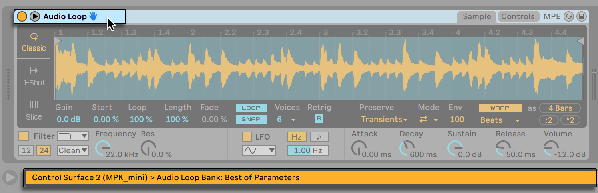
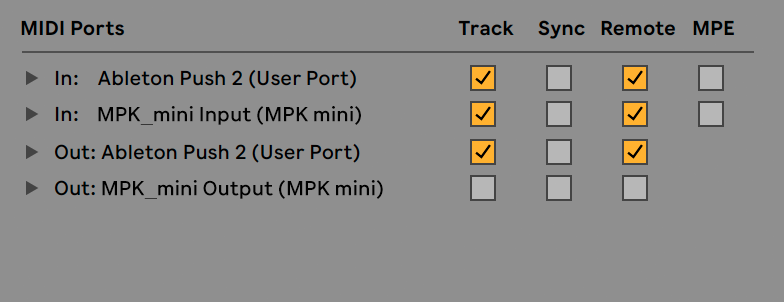
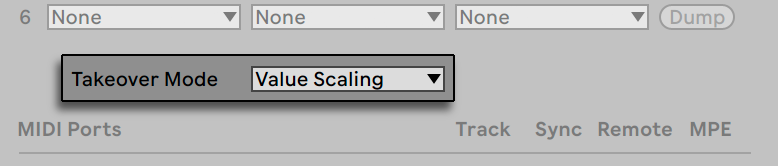
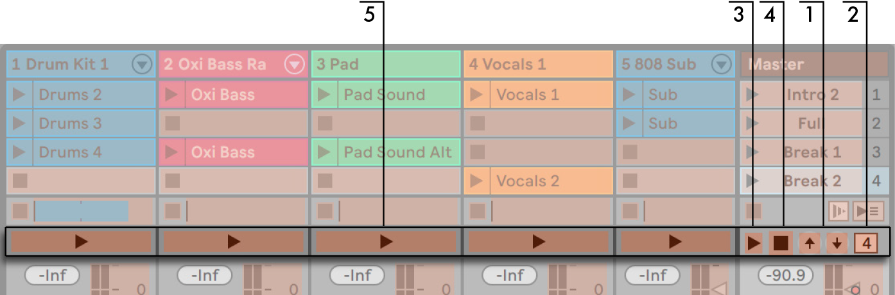

33. MIDI and Key Remote Control
To liberate the musician from the mouse, most of Live’s controls can be remote-controlled with an external MIDI controller and the computer keyboard. This chapter describes the details of mapping to the following specific types of controls in Live’s user interface:
- Session View slots — Note that MIDI and computer key assignments are bound to the slots, not to the clips they contain.
- Switches and buttons — Among them the Track and Device Activator switches, the Control Bar’s tap tempo, metronome and transport controls.
- Radio buttons — A radio button selects from among a number of options. One instance of a radio button is the crossfader assignment section in each track, which offers three options: The track is assigned to the crossfader’s A position, the track is unaffected by the crossfader, or the track is affected by the crossfader’s B position.
- Continuous controls — Like the mixer’s volume, pan and sends.
- The crossfader — The behavior of which is described in detail in the respective section of the Mixing chapter.
33.1 MIDI Remote Control
Live can be controlled remotely by external MIDI control surfaces, such as MIDI keyboards or controller boxes. Live also offers dedicated control via Ableton Push 1, Push 2, and Push 3.
Before we explain how remote control assignments are made and implemented, let’s first make the distinction between MIDI remote control and a separate use of MIDI in Live: as the input for our MIDI tracks. Let’s suppose that you are using a MIDI keyboard to play an instrument in one of Live’s MIDI tracks. If you assign C-1 on your MIDI keyboard to a Session View Clip Launch button, that key will cease playing C-1 of your MIDI track’s instrument, as it now ”belongs” solely to the Clip Launch button.
MIDI keys that become part of remote control assignments can no longer be used as input for MIDI tracks. This is a common cause of confusion that can be easily resolved by observing the Control Bar’s MIDI indicators.
Before making any MIDI assignments, you will need to set up Live to recognize your control surfaces. This is done in the Link, Tempo & MIDI tab of Live’s Settings, which can be opened with the Ctrl, (Win) / Cmd, (Mac) keyboard shortcut.
33.1.1 Natively Supported Control Surfaces
Control Surfaces are defined via the menus in the Link, Tempo & MIDI tab. Up to six supported control surfaces can be used simultaneously in Live.

Open the first chooser in the Control Surface column to see whether your control surface is supported natively by Live; if it is listed here, you can select it by name, and then define its MIDI input and output ports using the two columns to the right. If your controller is not listed here, don’t fret — it can still be enabled manually in the next section, Manual Control Surface Setup.
Depending on the controller, Live may need to perform a ”preset dump” to complete the setup. If this is the case, the Dump button to the right of your control surface’s choosers in the Live Settings will become enabled. Before pressing it, verify that your control surface is ready to receive preset dumps. The method for enabling this varies for each manufacturer and product, so consult your hardware’s documentation if you are unsure. Finally, press the Dump button; Live will then set up your hardware automatically.
33.1.1.1 Instant Mappings
In most cases, Live uses a standard method for mapping its functions and parameters to physical controls. This varies, of course, depending upon the configuration of knobs, sliders and buttons on the control surface. These feature-dependent configurations are known as instant mappings.
You can always manually override any instant mappings with your own assignments. In this case, you will also want to enable the Remote switches for the MIDI ports that your control surface is using. This is done in the MIDI Ports section of the Link, Tempo & MIDI Settings tab, and is described in the next section.
Instant mappings are advantageous because the control surface’s controllers will automatically reassign themselves in order to control the currently selected device in Live.

In addition to following device selection, natively supported control surfaces can be ”locked” to specific devices, guaranteeing hands-on access no matter where the current focus is in your Live Set. To enable or disable locking, right-click on a device’s title bar, and then select your preferred controller from the ”Lock to…” context menu. You’ll recognize the same list of control surfaces that you defined in the Link, Tempo & MIDI Settings. By default, the instrument in a MIDI track will automatically be locked to the control surface when the track is armed for recording.

A hand icon in the title bar of locked devices serves as a handy reminder of their status.
Note that some control surfaces do not support locking to devices.
33.1.2 Manual Control Surface Setup
If your MIDI control surface is not listed in the Link, Tempo & MIDI Settings’ Control Surface chooser, it can still be enabled for manual mapping in the MIDI Ports section of this tab.

The MIDI Ports table lists all available MIDI input and output ports. To use an input port for remote control of Live, make sure the corresponding switch in its Remote column is set to ”On.” You can use any number of MIDI ports for remote mapping; Live will merge their incoming MIDI signals.
When working with a control surface that provides physical or visual feedback, you will also need to enable the Remote switch for its output port. Live needs to be able to communicate with such control surfaces when a value has changed so that they can update the positions of their motorized faders or the status of their LEDs to match.
To test your setup, try sending some MIDI data to Live from your control surface. The Control Bar’s MIDI indicators will flash whenever Live recognizes an incoming MIDI message.
Once your controller is recognized by Live, you have completed the setup phase (but we recommend that you take the time to select a Takeover Mode before you leave the Settings behind). Your next step will be creating MIDI mappings between your control surface and Live. Luckily, this is a simple task, and you only need to do it for one parameter at a time.
33.1.3 Takeover Mode

When MIDI controls that send absolute values (such as faders) are used in a bank-switching setup, where they address a different destination parameter with each controller bank, you will need to decide how Live should handle the sudden jumps in values that will occur when moving a control for the first time after switching the bank. Three takeover modes are available:
None — As soon as the physical control is moved, its new value is sent immediately to its destination parameter, usually resulting in abrupt value changes.
Pick-Up — Moving the physical control has no effect until it reaches the value of its destination parameter. As soon as they are equal, the destination value tracks the control’s value 1:1. This option can provide smooth value changes, but it can be difficult to estimate exactly where the pick-up will take place.
Value Scaling — This option ensures smooth value transitions. It compares the physical control’s value to the destination parameter’s value and calculates a smooth convergence of the two as the control is moved. As soon as they are equal, the destination value tracks the control’s value 1:1.
33.2 The Mapping Browser

All manual MIDI, computer keyboard and Macro Control mappings are managed by the Mapping Browser. The Mapping Browser is hidden until one of the three mapping modes is enabled. It will then display all mappings for the current mode. For each mapping, it lists the control element, the path to the mapped parameter, the parameter’s name, and the mapping’s Min and Max value ranges. The assigned Min and Max ranges can be edited at any time, and can be quickly inverted with a context menu command. Delete mappings using your computer’s Backspace (Win) or Delete (Mac) key.
Note that Instant Mappings are context based and are not displayed in the Mapping Browser.
33.2.1 Assigning MIDI Remote Control

Once your remote control setup has been defined in the Link, Tempo & MIDI Settings, giving MIDI controllers and notes remote control assignments is simple:
- Enter MIDI Map Mode by pressing the MIDI switch in Live’s upper right-hand corner. Notice that assignable elements of the interface become highlighted in blue, and that the Mapping Browser becomes available. If your browser is closed, CtrlAltB (Win) / CmdOptionB (Mac) will open it for you.
- Click on the Live parameter that you’d like to control via MIDI.
- Send a MIDI message by pressing a keyboard key, turning a knob, etc., on your MIDI controller. You will see that this new MIDI mapping is now listed in the Mapping Browser.
- Exit MIDI Map Mode by pressing the MIDI switch once again. The Mapping Browser will disappear, but you can always review your mappings by entering MIDI Map Mode again.
33.2.2 Mapping to MIDI Notes
MIDI notes send simple Note On and Note Off messages to Live’s interface elements. These messages can produce the following effects on controls in Live:
- Session View Slots — Note On and Note Off messages affect clips in the slot according to their Launch Mode settings.
- Switches — A Note On message toggles the switch’s state.
- Radio Buttons — Note On messages toggle through the available options.
- Variable Parameters — When assigned to a single note, Note On messages toggle the parameter between its Min and Max values. When assigned to a range of notes, each note is assigned a discrete value, equally spaced over the parameter’s range of values.
Session View slots can be assigned to a MIDI note range for chromatic playing: First play the root key (this is the key that will play the clip at its default transposition), and then, while holding down the root key, hold one key below the root and one above it to define the limits of the range.
33.2.3 Mapping to Absolute MIDI Controllers
Absolute MIDI controllers send messages to Live in the form of absolute values ranging from 0 to 127. These values lead to different results depending on the type of Live control to which they are assigned. A value message of 127, for example, might turn the Volume control on a Live track all the way up or play a Session View clip. Specifically, MIDI controller messages from 0 to 127 can produce the following effects on controls in Live:
- Session View Slots — Controller values 64 and above are treated like Note On messages. Controller values 63 and below are treated like Note Off messages.
- Switches — For track activators and on/off buttons in devices, controller values that are within the mapping’s Min and Max range turn the switch on. Controller values that are above or below this range turn it off. You can reverse this behavior by setting a Min value that is higher than its corresponding Max value. In this case, controller values that are outside of the range turn the switch on, while values inside the range turn it off. For all other switches (such as transport controls), controller values 64 and above turn the switch on, while controller values below 64 turn it off.
- Radio Buttons — The controller’s 0…127 value range is mapped onto the range of available options.
- Continuous Controls — The controller’s 0…127 value range is mapped onto the parameter’s range of values.
Live also supports pitch bend messages and high-precision (”14-bit Absolute”) controller messages with a 0…16383 value range. The above specifications apply to these as well, except that the value range’s center is at 8191/8192.
33.2.4 Mapping to Relative MIDI Controllers
Some MIDI controllers can send ”value increment” and ”value decrement” messages instead of absolute values. These controls prevent parameter jumps when the state of a control in Live and the corresponding control on the hardware MIDI controller differ. For example, imagine that you have assigned the pan knob on your control surface to the pan parameter of a track in Live. If the hardware control is panned hard right, and the Live control is panned hard left, a slight movement in a hardware pan knob that sends absolute values would tell Live to pan right, causing an abrupt jump in the track’s panning. A pan knob sending relative messages would prevent this, since its incremental message to Live would simply say, ”Pan slightly to the left of your current position.”
There are four types of relative controllers: Signed Bit, Signed Bit 2, Bin Offset and Twos Complement.
Each of these are also available in a ”linear” mode. Some MIDI encoders use ”acceleration” internally, generating larger changes in value when they are turned quickly. For control surfaces that are not natively supported, Live tries to detect the controller type and whether acceleration is being used or not.
You can improve the detection process by moving the relative controller slowly to the left when you make an assignment. Live will offer its suggestion in the Status Bar’s ”mode” chooser, but if you happen to know the relative controller type, you can manually select it.
Live will do the following with relative MIDI controller messages:
- Session View Slots — Value increment messages are treated like Note On messages. Value decrement messages are treated like Note Off messages.
- Switches — Increment messages turn the switch on. Decrement messages turn it off.
- Radio Buttons — Increment messages make the radio button jump forward to the next available option. Decrement messages make it jump backward.
- Continuous Controls — Each type of relative MIDI controller uses a different interpretation of the 0…127 MIDI controller value range to identify value increments and decrements.
Please consult the documentation that came with your MIDI controller if you need further information on relative MIDI controllers.
33.2.4.1 Relative Session View Navigation
Notice that you can make not only absolute mappings to individual slots and scenes, but also relative mappings to move the highlighted scene and operate on the highlighted clips.
In both MIDI Map Mode and Key Map Mode, a strip of assignable controls appears below the Session grid:

- Assign these buttons to keys, notes or controllers to move the highlighted scene up and down.
- Assign this scene number value box to a MIDI controller — preferably an endless encoder — to scroll through the scenes. For details, see the previous section on Relative Map Modes.
- Assign this button to launch the highlighted scene. If the Record, Warp & Launch Settings’ Select Next Scene on Launch option is checked, you can move successively (and hopefully successfully!) through the scenes.
- Assign this button to cancel the launch of a triggered scene.
- Assign these buttons to launch the clip at the highlighted scene, in the respective track.
Relative Session mapping is useful for navigating a large Live Set, as Live always keeps the highlighted scene at the Session View’s center.
33.2.4.2 Mapping to Clip View Controls
The Clip View displays the settings for whichever clip happens to be currently selected, but it will also display the settings of multi-selected clips. To avoid unpleasant musical surprises, it is important to remember that creating remote control mappings for any control in the Clip View interface could potentially affect any clip in the Live Set. For this reason, we recommend mapping Clip View controls to relative MIDI controllers to prevent undesirable jumps in parameter values.
33.2.5 Computer Keyboard Remote Control

Creating control surface assignments for your computer keyboard is straightforward:
- Enter Key Map Mode by pressing the KEY switch in the upper right-hand corner of the Live screen. Notice that the assignable elements of the interface become highlighted in red when you enter Key Map Mode. The Mapping Browser will also become available. If the Browser is hidden, you will want to show it at this point using the appropriate View menu command.
- Click on the Live parameter that you wish to assign to a key. Remember that only the controls that are shown with a red overlay are available for mapping.
- Press the computer key to which you wish to assign the control. The details of your new mapping will be displayed in the Mapping Browser.
- Leave Key Map Mode by pressing Live’s KEY switch once again. The Mapping Browser will disappear, but your mappings can be reviewed at any time simply by entering Key Map Mode again.
Keyboard assignments can produce the following effects in Live:
- Clips in Session View slots will be affected by mapped keys according to their Launch Mode settings.
- Keys assigned to switches will toggle switch states.
- Keys assigned to radio buttons will toggle through the available options.
Please be sure not to confuse this remote control functionality with Live’s ability to use the computer keyboard as a pseudo-MIDI keyboard that can generate MIDI notes from computer keystrokes for use with instruments.